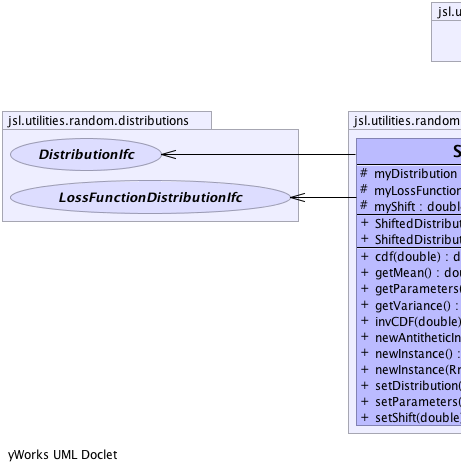
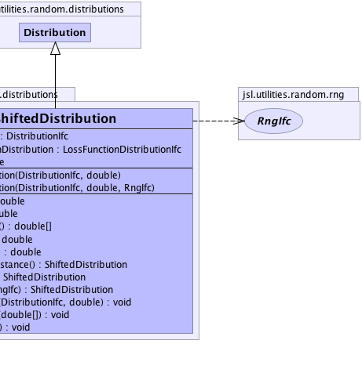

jsl.utilities.random.AbstractRandom
jsl.utilities.random.distributions.Distribution
jsl.utilities.random.distributions.ShiftedDistribution
jsl.utilities.random.AbstractRandom
jsl.utilities.random.distributions.Distribution
jsl.utilities.random.distributions.ShiftedDistribution
|
||||||||||
| PREV CLASS NEXT CLASS | FRAMES NO FRAMES | |||||||||
| SUMMARY: NESTED | FIELD | CONSTR | METHOD | DETAIL: FIELD | CONSTR | METHOD | |||||||||
java.lang.Object
public class ShiftedDistribution
Represents a Distribution that has been Shifted (translated to the right) The shift must be >= 0.0
|  |  |
| Nested Class Summary |
|---|
| Nested classes/interfaces inherited from class jsl.utilities.random.AbstractRandom |
|---|
AbstractRandom.RandomControls |
| Field Summary | |
|---|---|
protected DistributionIfc |
myDistribution
|
protected LossFunctionDistributionIfc |
myLossFunctionDistribution
|
protected double |
myShift
|
| Fields inherited from class jsl.utilities.random.distributions.Distribution |
|---|
myRNG |
| Fields inherited from class jsl.utilities.random.AbstractRandom |
|---|
myId, myName |
| Constructor Summary | |
|---|---|
ShiftedDistribution(DistributionIfc distribution,
double shift)
Constructs a shifted distribution based on the provided distribution |
|
ShiftedDistribution(DistributionIfc distribution,
double shift,
RngIfc rng)
Constructs a shifted distribution based on t he provided distribution |
|
| Method Summary | |
|---|---|
double |
cdf(double x)
Returns the F(x) = Pr{X <= x} where F represents the cumulative distribution function |
double |
getMean()
Returns the mean or expected value of a distribution |
double[] |
getParameters()
Gets the parameters for the shifted distribution shift = parameter[0] The other elements of the returned array are the parameters of the underlying distribution |
double |
getVariance()
Returns the variance of the distribution if defined |
double |
invCDF(double p)
Provides the inverse cumulative distribution function for the distribution While closed form solutions for the inverse cdf may not exist, numerical search methods can be used to solve F(X) = U. |
ShiftedDistribution |
newAntitheticInstance()
Returns a new instance that will supply values based on antithetic U(0,1) when compared to this distribution |
ShiftedDistribution |
newInstance()
Returns a new instance of the random source with the same parameters but an independent generator |
ShiftedDistribution |
newInstance(RngIfc rng)
Returns a new instance of the random source with the same parameters with the supplied RngIfc |
void |
setDistribution(DistributionIfc distribution,
double shift)
Changes the underlying distribution and the shift |
void |
setParameters(double[] parameters)
Sets the parameters of the shifted distribution shift = parameter[0] If supplied, the other elements of the array are used in setting the parameters of the underlying distribution. |
void |
setShift(double shift)
Changes the shift |
| Methods inherited from class jsl.utilities.random.distributions.Distribution |
|---|
advanceToNextSubstream, cdf, complementaryCDF, getAntitheticOption, getAntitheticValue, getRandomNumberGenerator, getStandardDeviation, getValue, inverseContinuousCDFViaBisection, inverseContinuousCDFViaBisection, inverseDiscreteCDFViaSearchUp, resetStartStream, resetStartSubstream, setAntitheticOption, setRandomNumberGenerator, toString |
| Methods inherited from class jsl.utilities.random.AbstractRandom |
|---|
getId, getName, getSample, getSample, makeControls, setControls, setId, setName |
| Methods inherited from class java.lang.Object |
|---|
clone, equals, finalize, getClass, hashCode, notify, notifyAll, wait, wait, wait |
| Methods inherited from interface jsl.utilities.random.SampleIfc |
|---|
getSample, getSample |
| Field Detail |
|---|
protected DistributionIfc myDistribution
protected LossFunctionDistributionIfc myLossFunctionDistribution
protected double myShift
| Constructor Detail |
|---|
public ShiftedDistribution(DistributionIfc distribution,
double shift)
distribution - shift - The linear shift
public ShiftedDistribution(DistributionIfc distribution,
double shift,
RngIfc rng)
distribution - shift - The linear shiftrng - | Method Detail |
|---|
public final ShiftedDistribution newInstance()
newInstance in interface NewInstanceIfcnewInstance in interface RandomIfcnewInstance in class Distributionpublic final ShiftedDistribution newInstance(RngIfc rng)
newInstance in interface RandomIfcnewInstance in class Distributionrng -
public final ShiftedDistribution newAntitheticInstance()
newAntitheticInstance in class Distribution
public final void setDistribution(DistributionIfc distribution,
double shift)
distribution - must not be nullshift - must be >=0.0public final void setShift(double shift)
shift - must be >=0.0public void setParameters(double[] parameters)
parameters - an array of doubles representing the parameterspublic double cdf(double x)
CDFIfc
x - a double representing the upper limit
public double getMean()
MeanIfc
public double[] getParameters()
public double getVariance()
VarianceIfc
public double invCDF(double p)
CDFIfc
p - The probability to be evaluated for the inverse, p must be [0,1] or
an IllegalArgumentException is thrown
|
||||||||||
| PREV CLASS NEXT CLASS | FRAMES NO FRAMES | |||||||||
| SUMMARY: NESTED | FIELD | CONSTR | METHOD | DETAIL: FIELD | CONSTR | METHOD | |||||||||